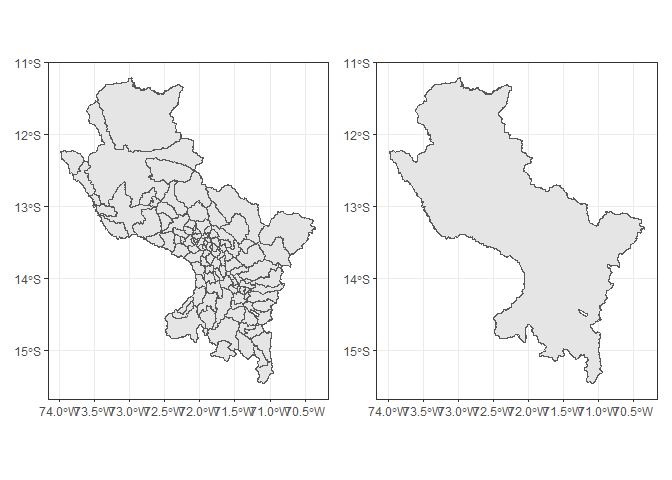

El paquete geoperu proporciona una interfaz conveniente para acceder a conjuntos de datos espaciales oficiales de Perú directamente desde R. Estos datos son recopilados del Instituto Nacional de Estadística e Informática (INEI) de Perú.
Instalación
Puedes instalar la versión de desarrollo de geoperu de la siguiente manera:
pak::pak("PaulESantos/geoperu")Para acceder a la información espacial de los distritos de cualquier provincia del Perú, puedes utilizar la función get_prov_sf().
library(geoperu)
#> This is geoperu 1.0.0
cusco_sf <- geoperu::get_prov_sf("CUSCO")
cusco_sf
#> Simple feature collection with 8 features and 4 fields
#> Geometry type: MULTIPOLYGON
#> Dimension: XY
#> Bounding box: xmin: -72.168 ymin: -13.64919 xmax: -71.80463 ymax: -13.4295
#> Geodetic CRS: WGS 84
#> # A tibble: 8 × 5
#> departamento provincia distrito capital geometry
#> * <chr> <chr> <chr> <chr> <MULTIPOLYGON [°]>
#> 1 CUSCO CUSCO SANTIAGO SANTIAGO (((-71.97273 -13.52632, -7…
#> 2 CUSCO CUSCO WANCHAQ WANCHAQ (((-71.94173 -13.52764, -7…
#> 3 CUSCO CUSCO CCORCA CCORCA (((-72.06208 -13.52782, -7…
#> 4 CUSCO CUSCO SAN SEBASTIAN SAN SEBASTIAN (((-71.88518 -13.49707, -7…
#> 5 CUSCO CUSCO SAYLLA SAYLLA (((-71.81537 -13.50536, -7…
#> 6 CUSCO CUSCO POROY POROY (((-72.05329 -13.53025, -7…
#> 7 CUSCO CUSCO SAN JERONIMO SAN JERONIMO (((-71.8479 -13.48693, -71…
#> 8 CUSCO CUSCO CUSCO CUSCO (((-71.93138 -13.43677, -7…
prov_sf <- geoperu::get_prov_sf(c("ANTA", "Urubamba", "calca"))
prov_sf
#> Simple feature collection with 24 features and 4 fields
#> Geometry type: MULTIPOLYGON
#> Dimension: XY
#> Bounding box: xmin: -72.77286 ymin: -13.71406 xmax: -71.71952 ymax: -12.50659
#> Geodetic CRS: WGS 84
#> # A tibble: 24 × 5
#> departamento provincia distrito capital geometry
#> * <chr> <chr> <chr> <chr> <MULTIPOLYGON [°]>
#> 1 CUSCO CALCA LARES LARES (((-71.90762 -13.02062, …
#> 2 CUSCO CALCA CALCA CALCA (((-71.87228 -13.18779, …
#> 3 CUSCO CALCA YANATILE QUEBRADA HONDA (((-71.9039 -12.73066, -…
#> 4 CUSCO ANTA CHINCHAYPUJIO CHINCHAYPUJIO (((-72.25802 -13.52288, …
#> 5 CUSCO ANTA ANTA ANTA (((-72.11767 -13.39649, …
#> 6 CUSCO ANTA PUCYURA PUCYURA (((-72.06076 -13.50311, …
#> 7 CUSCO ANTA CACHIMAYO CACHIMAYO (((-72.00248 -13.44256, …
#> 8 CUSCO CALCA SAN SALVADOR SAN SALVADOR (((-71.75679 -13.43086, …
#> 9 CUSCO ANTA MOLLEPATA MOLLEPATA (((-72.54716 -13.55565, …
#> 10 CUSCO ANTA LIMATAMBO LIMATAMBO (((-72.54668 -13.33261, …
#> # ℹ 14 more rowsPara visualizar la información geoespacial recuperada con la función get_prov_sf() del paquete geoperu, puedes utilizar diversas herramientas en R. Una opción común es utilizar la librería ggplot2 junto con la funcionalidad de visualización de objetos sf.
Aquí tienes un ejemplo básico de cómo visualizar los datos:
 Puedes personalizar el gráfico agregando capas adicionales, ajustando los estilos y agregando etiquetas según tus necesidades específicas.